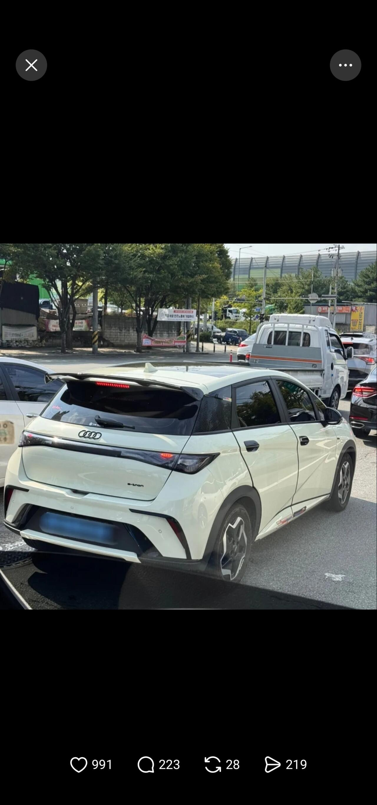

사라진 BYD 마크
댓글
곽튜브 안경글 : 남이사 뭘 사든 왜 지랄?
9급 웹툰 어쩌고 글 : 남 인생에 왜 훈수를?
테슬라 qc 문제 : 아무튼 fsd 빨리
Byd글 : 니 아빠 차 비와디 ㅋㅋㅋㅋ 짱 차를 왜 사냐 개병신들 ㅋㅋㅋㅋ
다 같은 사람의 의견인거임?
우리는 보통 주류 의견을 보고 이야기해요.
그걸 여론이라 하구요.
지금 내가 요약한게 개드립 여론에 가깝다는걸 부정할 수 있니?
비싼 안경 정품을 산거면 모를까 중국산 사서 브랜드 지우고 비싼 안경 브랜드 마킹하면 그걸 누가 좋게봄?
도로에선 지혼자만의 문제가 아님
난 저차근처에 가기싫어 같이뒤지기 싫단말야
영포티식 튜닝
정비소 어케가냐 다른건 집어치우고
난 저거타고 못갈듯
캘리퍼에 브렘보 붙이는거랑 동급인가
브렘보 캘리퍼는 성능튜닝이지
붙이는 스티커말야
존나 병신같네;
잘어울리는데?ㅋ
Rs3 라고해라
이-트론 이지랄 ㅋㅋ
이해할 수 있다. 얼마나 쪽팔리겠어.
근데 그냥 민짜로 냅두면 안되냐. 그 편이 훨 낫겠구만.
가릴꺼면 만다 사노 ㅋㅋㅋㅋㅋㅋㅋㅋㅋㅋㅋㅋㅋ
쪽팔리면 차를 왜사지??
난 삿으면 걍 타구다닐거같은데
잼민이들 실내화에 나이키 그려논거 같네ㅋㅋㅋ
BYD 오너들도 아는거지 자기들도 중국차 타고다녀서
솔직히 개쪽팔리다는거
타고다니면서 베이스로 깔고가는게 쪽팔림임